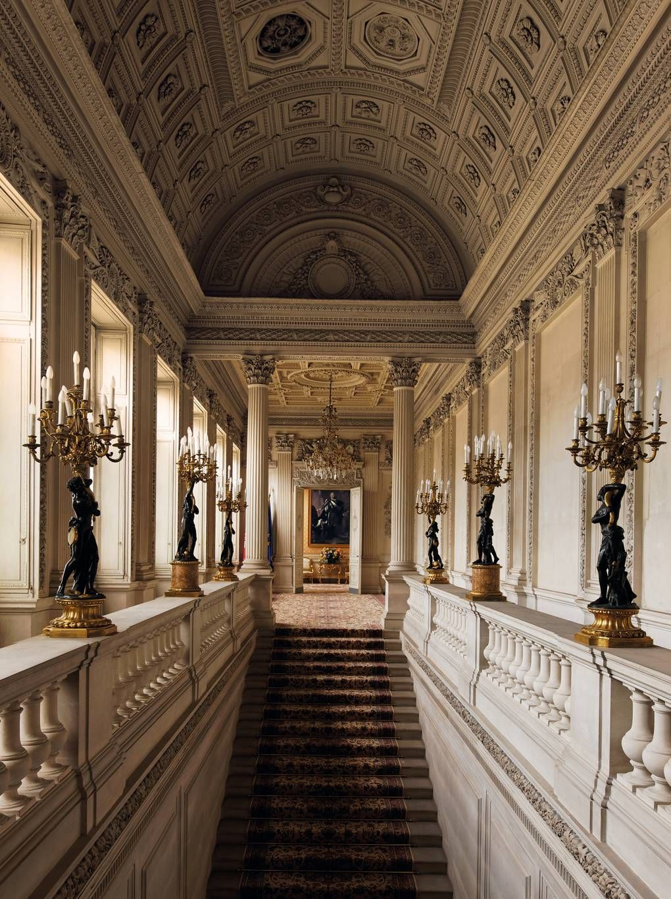

Reviewing Architecture
In my art improvement post, I develop the theory that a fundamental quality of art is developing a relationship between abstract energy and a structural rigor to give it shape. Although painting has additional considerations, architecture is primarly concerned with spatial relationships. Here I look at several samples of architecture and explain my aesthetic evaluation of each to further explore this idea.
Let's start with a pretty 'vanilla' design (1). Although it's not exactly anything we haven't seen, I find this space very appealing. The hall takes cues from classical anquity for its broad forms. The walls, and other ornamentation sit perpendicularly to each other for the most part. The design has modified significantly on top of this base however; the curved ceiling, pilasters, balustrades and candelabra are all more modern additions. I doubt there were many staircases that were narrow and flanked by pillars like that in Rome or Greece either. Notably, there is a heavy band of ornamentation that runs in a strip just under the moulding. This is of particular importance, because it means that detail has been relatively restrained for the rest of the walls, giving areas of rest. In tone with classicism, the palatte is very restrained. However, the gold candelabra and their black figures stick out sorely in color and tone with the rest of the room, leading to a feeling of incongruity. Also, the wall to our right has a pattern that suggests several indentical framing elements but have no contents. This seems like an odd choice and distracts somewhat as well. A strong work overall, however.

Here's a design I have some larger issues with.
This design really interests me, because it offers a glimpse of the potential here.